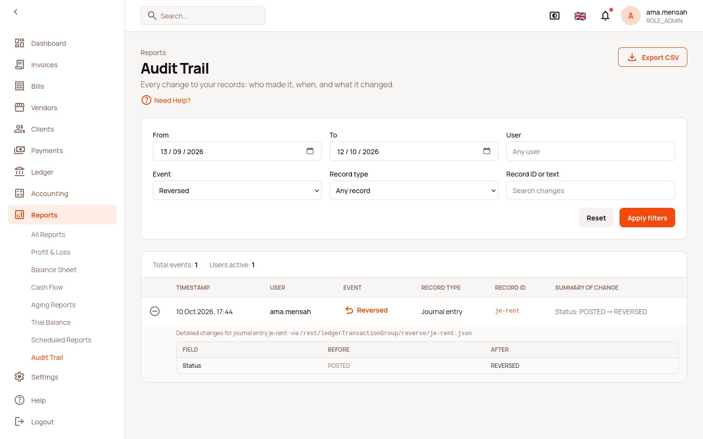
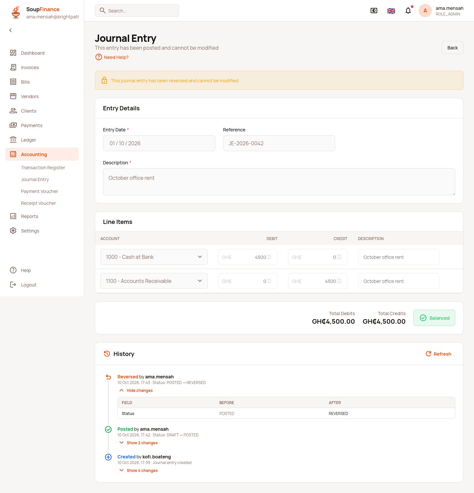

Screens (captured from the E2E spec)


SOUPFIN-159 Audit Trail Backend Plan: a read endpoint over the existing audit log
For: a soupmarkets-web session. Per
.claude/rules/backend-changes-workflow.md, the soupfinance
session does not edit the backend. Frontend: done on
the SOUPFIN-159 branch. It works today on the existing endpoint;
everything below makes it faster, exact and complete. HTML
version with screens and the plan index:
plans/soupfin-159-audit-trail.html.
Context
SOUPFIN-159 asks who created, edited, approved, posted and reversed
each ledger record. It wants a History panel on journal entries and
vouchers, and a /reports/audit-trail report with filters
and CSV export.
The backend already records this. What exists today (read 2026-10-12, soupmarkets-web and the LXC):
| Piece | State |
|---|---|
| Audit plugin | org.grails.plugins:audit-logging:4.0.3,
auditDomainClassName = 'soupbroker.AuditTrail' |
soupbroker.AuditTrail |
Table audit_log. MultiTenant, so every
query is scoped to the caller's tenant. One row per changed property:
actor, uri, className,
persistedObjectId, eventName
(INSERT/UPDATE/DELETE), propertyName,
oldValue, newValue, dateCreated,
tenantId |
| Audited ledger domains | LedgerTransactionGroup, LedgerTransaction,
Voucher implement Auditable |
AuditTrailController.index |
@Secured(['ROLE_ADMIN','ROLE_USER']). max
capped at 1000. Filters: search (ilike over 8 columns,
every word must match), from/to |
| Exact filters on the LXC build of 2026-10-12 | className and persistedObjectId are
applied exactly. actor and eventName are
ignored |
| Volume | 158,269 rows on soupbroker_dev. One voucher save writes
about 40 rows |
| Config | Audit is disabled in development
(application.yml) but writes on the LXC anyway; production
reads AUDIT_DISABLED (default enabled) |
What the SPA does today, and why it is not enough
The SPA reads index.json, re-applies every filter in the
browser, and folds the per-property rows into one event per save
(soupfinance-web/src/api/endpoints/auditTrail.ts). That is
correct, but:
- Row cap. The report fetches 1000 rows. 1000 rows is about 25 saves, so a busy month is cut off. The page says so, but cannot page further back by event.
- One request per record. A journal entry's history
needs the group and every line (approval changes the lines' status).
searchANDs its words, so N lines means N+1 requests. - No exact actor filter. The actor goes into
search, which also matches the actor's name insideoldValue/newValue. - Slow search.
ilike '%x%'over 8 columns, including twotextcolumns, cannot use an index. - "Posted" and "Reversed" are inferred. The SPA reads
them from the request path (
/post,/reverse,/approve,/cancel) or astatuschange. That works, but the backend knows the action and should say it.
1.
AuditTrail.searchList: exact filters
Add to the criteria in AuditTrail.searchList, each only
when the param is present:
| Param | Criteria | Notes |
|---|---|---|
className |
eq('className', v) |
Accept a short name too: if it has no ., match
like('className', '%.' + v) |
persistedObjectId |
eq for one value, in for a list |
persistedObjectId=a&persistedObjectId=b gives the
JE group and its lines in one request |
actor |
eq('actor', v) |
Exact, case-insensitive (ilike without wildcards) |
eventName |
eq('eventName', v) |
INSERT / UPDATE / DELETE |
Keep search, but stop searching
oldValue/newValue unless
searchValues=true: those two text columns are
most of the cost.
2. New action:
GET /rest/auditTrail/history.json
One event per save, newest first, paged by event rather than by row.
Request:
| Param | Required | Meaning |
|---|---|---|
className |
no | Short or qualified class name |
id |
no, repeatable | Record id(s). The SPA sends a JE group and all its lines |
actor |
no | Exact username |
action |
no | CREATED, EDITED, APPROVED, POSTED, REVERSED, CANCELLED, ARCHIVED, DELETED |
from, to |
no | yyyy-MM-dd, inclusive, through
utilityService.formatFromAndToDates |
max, offset |
no | Events, not rows. max default 25, cap 200 |
Response:
{
"total": 132,
"events": [
{
"at": "2026-10-12T11:00:00Z",
"actor": "ama.mensah",
"action": "REVERSED",
"className": "soupbroker.finance.LedgerTransactionGroup",
"entityId": "je-1",
"uri": "/rest/ledgerTransactionGroup/reverse/je-1.json",
"changes": [ { "property": "status", "oldValue": "POSTED", "newValue": "REVERSED" } ]
}
]
}Rules (the SPA's groupAuditRows and
classifyAuditAction are the reference; keep the backend's
output identical):
- Group rows by
className,persistedObjectId,eventName,actor,uri, anddateCreatedto the second. - Drop noise properties:
serialised,callback,synchronizerUri,synchronizerToken,SYNCHRONIZER_TOKEN,SYNCHRONIZER_URI,dateCreated,lastUpdated,tenantId,version. Also drop INSERT properties whose old and new values are both null. An UPDATE left with no changes is not an event. - Action: INSERT → CREATED, DELETE → DELETED. For
UPDATE, the request path decides first (
/reverse,/cancel,/postor/batchPost,/approve). Otherwise the newstatusdecides (REVERSED, CANCELLED/CANCELED, POSTED, APPROVED), thenposted → true, thenarchived → true. Anything else is EDITED. - Better still: have the post, reverse, approve and cancel actions set
auditLogcontext so the action is recorded, not inferred. The plugin supports a customuri/actorclosure.
The SPA will switch getEntityHistory() and
listAuditEvents() to this action once it ships. Until then
they stay on index.json.
3. Index
CREATE INDEX audit_log_tenant_class_obj_date
ON audit_log (tenant_id, class_name, persisted_object_id, date_created);
CREATE INDEX audit_log_tenant_actor_date
ON audit_log (tenant_id, actor, date_created);The existing single-column indexes (old_value_idx,
new_value_idx on text columns) are prefix
indexes that ilike '%x%' cannot use. Leave them, but do not
rely on them.
4. Security and tenancy
- Tenancy is already enforced by
MultiTenant. Add a functional spec: two tenants each write a voucher, and each sees only its own rows fromindex.jsonandhistory.json. On the LXC (2026-10-12), a user resolved to tenant01e11e50…saw none of the Demo tenant's rows, which shows today's behaviour. @Secured(['ROLE_ADMIN','ROLE_USER'])lets every user read the whole tenant's log, includingoldValue/newValueof every audited domain. Decide whetherROLE_USERshould be limited to finance classes (soupbroker.finance.*) or to records they can already read. Until then the SPA shows the report to every signed-in user, matching the backend.AuditTrailhascache usage: 'read-only'andcache(true)insearchList. A freshly written row must appear in the next read: verify that the query cache is evicted on insert, or dropcache(true)for this domain.
5. Configuration
- Confirm
AUDIT_DISABLEDis unset on the production host that servestas.soupmarkets.com, so SoupFinance tenants are audited. - Add
AuditabletoInvoice,Bill,InvoicePayment,BillPaymentandLedgerAccountif they do not have it. The report's record-type filter already lists them.
Tests
| Kind | What |
|---|---|
| Unit | AuditTrail.searchList with each exact filter, an
in list, and searchValues=false |
| Unit | Grouping and action classification: copy the cases from
soupfinance-web/src/api/endpoints/__tests__/auditTrail.test.ts |
| Functional | Save, post and reverse a JE (after SOUPFIN-155), then call
history.json?className=LedgerTransactionGroup&id=…:
three events, newest first, each with its actor |
| Functional | Tenant isolation as in section 4 |
| Functional | Overflow: 10,000 rows across 250 saves page by event correctly
(total = 250, max=25 gives 10 pages) |
Related
- SOUPFIN-155: JE post and reverse endpoints. Needed for the acceptance "posting then reversing a JE shows both events" on a real backend.
- SOUPFIN-248:
saveMultipleanswers 201 without saving the entry. Found while testing this; until it is fixed, a JE saved from SoupFinance writes no audit rows.